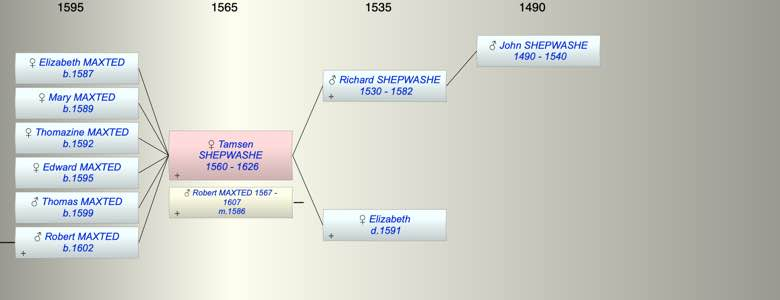

| [Index] |
| Tamsen SHEPWASHE (1560 - 1626) |
|  |
| b. 1560 at Chilham |
| m. 07 Nov 1586 Robert MAXTED (1567 - 1607) at Chilham |
| d. 1626 aged 66 |
| Parents: |
| Richard SHEPWASHE (1530 - 1582) |
| Elizabeth ( - 1591) |
| Siblings (6): |
| Richard SHEPWASHE (1562 - ) |
| Anne SHEPWASHE (1568 - ) |
| John SHEPWASHE (1572 - ) |
| James SHEPWASHE (1575 - 1575) |
| Jane SHEPWASHE (1578 - ) |
| Thomas SHEPWASHE (1580 - 1581) |
| Children (6): |
| Elizabeth MAXTED (1587 - ) |
| Mary MAXTED (1589 - ) |
| Thomazine MAXTED (1592 - ) |
| Edward MAXTED (1595 - ) |
| Thomas MAXTED (1599 - ) |
| Robert MAXTED (1602 - ) |
| Grandchildren (2): |
| Ann MAXTED (1633 - 1685), John MAXTED (1636 - 1700) |
| Events in Tamsen SHEPWASHE (1560 - 1626)'s life | |||||
| Date | Age | Event | Place | Notes | Src |
| 1560 | Tamsen SHEPWASHE was born | Chilham | Note 1 | ||
| 1582 | 22 | Death of father Richard SHEPWASHE (aged 52) | Chilham | Note 2 | |
| 07 Nov 1586 | 26 | Married Robert MAXTED (aged 19) | Chilham | Note 3 | |
| 1587 | 27 | Birth of daughter Elizabeth MAXTED | Chilham | bap 3 Sep | |
| 1589 | 29 | Birth of daughter Mary MAXTED | Chilham | bap Chilham 25 Jan 1589/90 | |
| 1591 | 31 | Death of mother Elizabeth | Chilham | Note 4 | |
| 1592 | 32 | Birth of daughter Thomazine MAXTED | Chilham | bap 21 Jan 1592/93 | |
| 1595 | 35 | Birth of daughter Edward MAXTED | Chilham | bap 30 Nov 1595 | |
| 1599 | 39 | Birth of son Thomas MAXTED | Chilham | bap 15 Apr 1599 | |
| 1602 | 42 | Birth of son Robert MAXTED | |||
| 1607 | 47 | Death of husband Robert MAXTED (aged 40) | St Laurence | ex date of his Will | |
| 1626 | 66 | Tamsen SHEPWASHE died | |||
| Death of son Robert MAXTED | Note 5 | ||||
| Created on a Mac™ using iFamily for Mac™ on 8 Oct 2023 |